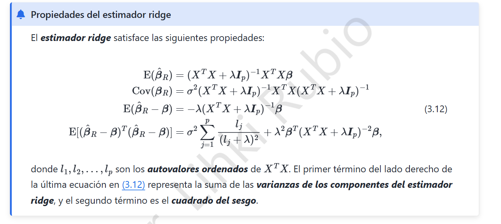

3. Ridge · Propiedades del estimador (3.12)

3.1 Modelo y condiciones
Partimos del modelo lineal \(y=X\beta+\varepsilon\), con diseño \(X\in\mathbb R^{n\times p}\) fijo, \(\mathbb E(\varepsilon)=0\), \(\operatorname{Cov}(\varepsilon)=\sigma^2I_n\) y penalización \(\lambda>0\). Suponemos las variables centradas para no penalizar el intercepto.
El estimador ridge y la matriz auxiliar son
La inversa existe porque \(X^TX\) es semidefinida positiva y la suma con \(\lambda I_p\) es definida positiva. Además, \(A\) es simétrica.
3.2 Primera propiedad: esperanza
Reemplazamos \(y\) por \(X\beta+\varepsilon\) y tomamos esperanza:
3.3 Segunda propiedad: covarianza
La parte aleatoria es \(AX^T\varepsilon\). Usamos \(\operatorname{Cov}(BU)=B\operatorname{Cov}(U)B^T\):
3.4 Tercera propiedad: sesgo
De \(A(X^TX+\lambda I)=I\) se deduce \(AX^TX=I-\lambda A\). Por lo tanto,
El parámetro \(\lambda\) introduce deliberadamente sesgo para disminuir la variabilidad del estimador.
3.5 Cuarta propiedad: error cuadrático medio
Para un vector estimador \(\hat\beta\) se cumple la descomposición
Si \(l_1,\dots,l_p\) son los autovalores no negativos de \(X^TX\), al diagonalizar ortogonalmente esa matriz se obtiene
Como \(A\) es simétrica, el cuadrado del sesgo es \(\lambda^2\beta^TA^2\beta\). En consecuencia,
Interpretación: el primer sumando mide varianza y el segundo sesgo al cuadrado. Aumentar \(\lambda\) reduce la varianza pero puede aumentar el sesgo: es el compromiso sesgo–varianza. Al contrario de mínimos cuadrados sin regularizar, ridge sigue estando definido incluso si \(X^TX\) es singular, siempre que \(\lambda>0\).
Precisión de notación: el estimador es \(\hat\beta_R\); el vector poblacional \(\beta\) es un parámetro fijo, no una variable aleatoria en el modelo clásico.